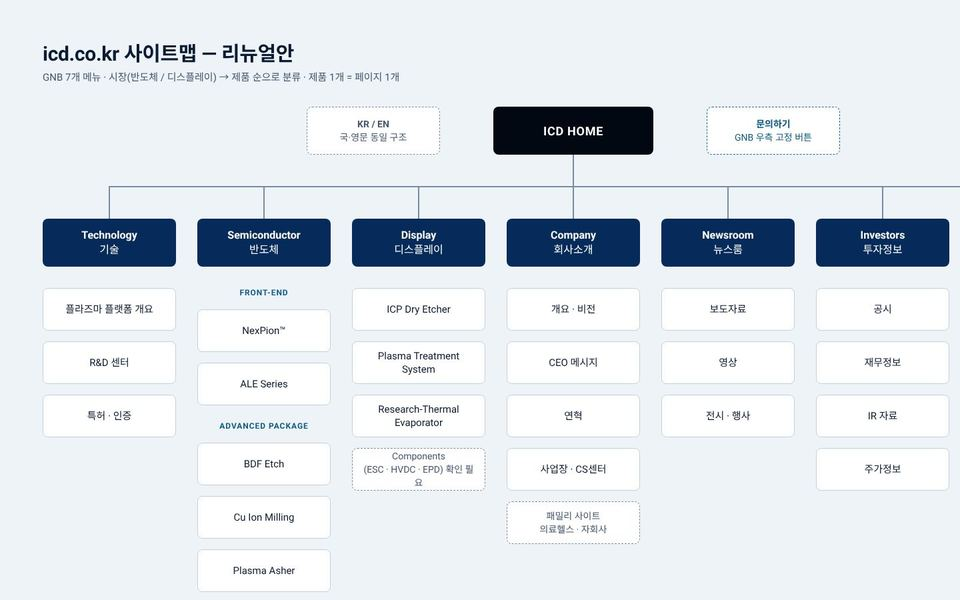
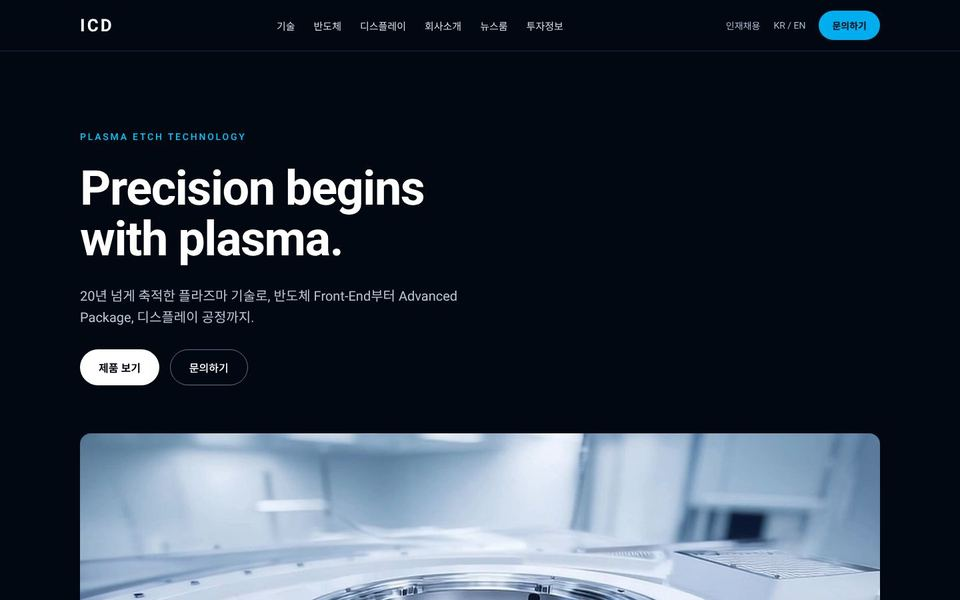
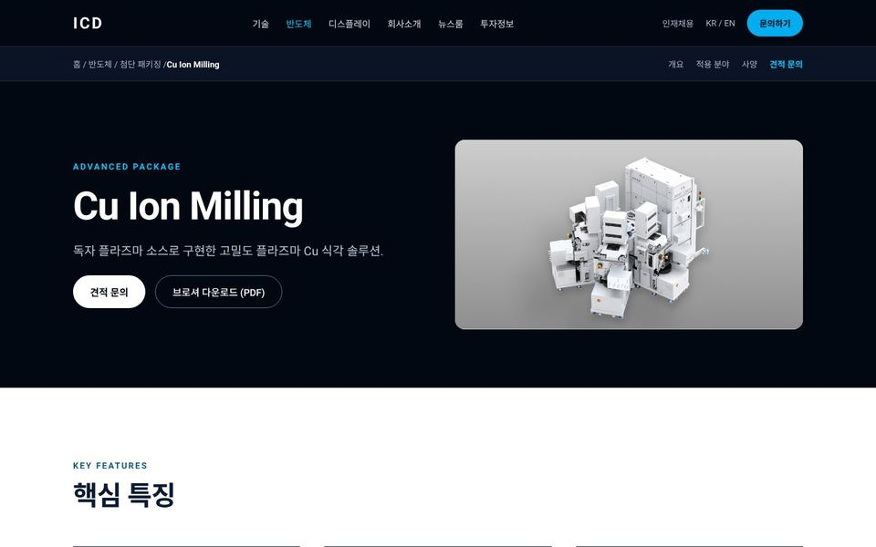
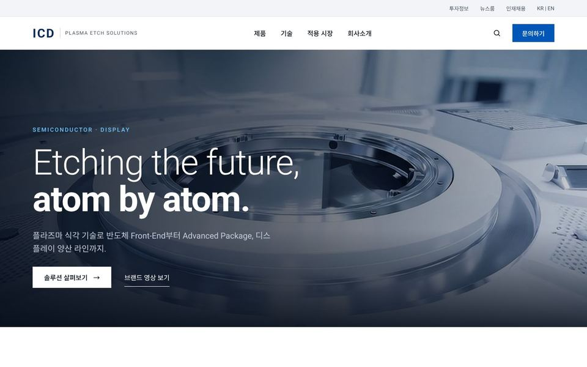
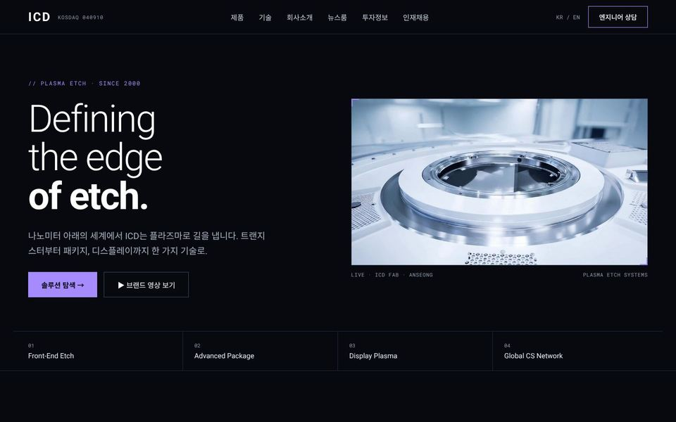
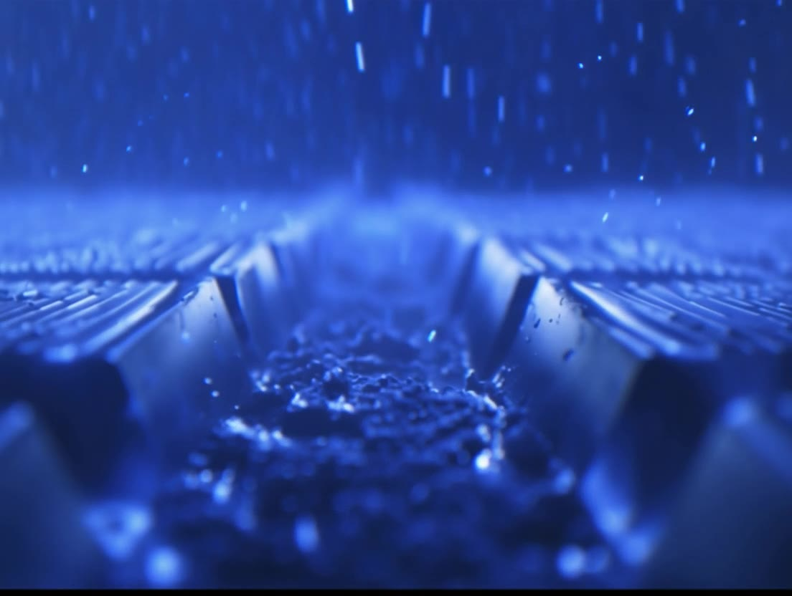
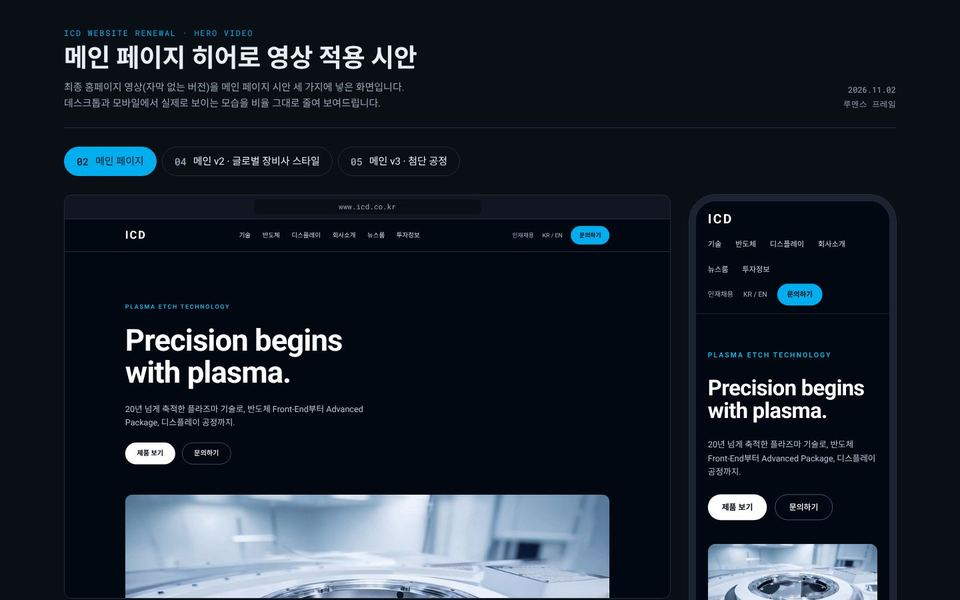

ICD WEBSITE RENEWAL · DESIGN DRAFT
㈜아이씨디 홈페이지 리뉴얼 시안
각 시안을 누르면 실제 웹사이트처럼 둘러볼 수 있습니다. PC와 휴대폰에서 모두 열리며, 휴대폰에서는 모바일 화면으로 바뀝니다.

01 · SITEMAP사이트맵 GNB 7개 메뉴와 하위 페이지 구성.
02 · MAIN메인 페이지 브랜드 영상을 헤드라인 아래 16:9 박스로 보여주는 기본형.
03 · PRODUCT제품 상세 템플릿 · Cu Ion Milling 모든 제품 페이지에 같은 구조로 적용할 상세 페이지 틀.
04 · MAIN v2메인 v2 · 글로벌 장비사 스타일 영상을 화면 전체 배경으로 쓰는 안. 휴대폰에서는 세로형 영상으로 바뀝니다.
05 · MAIN v3메인 v3 · 첨단 공정 다크 톤에 제품 탐색과 공정 단계를 직접 눌러 보는 인터랙티브 안. ABOUT ICD칩이 작아질수록,식각의 정밀도가

SEMICONDUCTOR반도체 전공정부터첨단 패키징까지. 06 · MAIN v4메인 v4 · 1/2 분할 레이아웃 화면을 반으로 나눠 글과 큰 사진·영상을 좌우로 번갈아 배치한 안.

07 · VIDEO히어로 영상 적용 미리보기 세 메인 시안의 PC·모바일 화면을 나란히 비교.